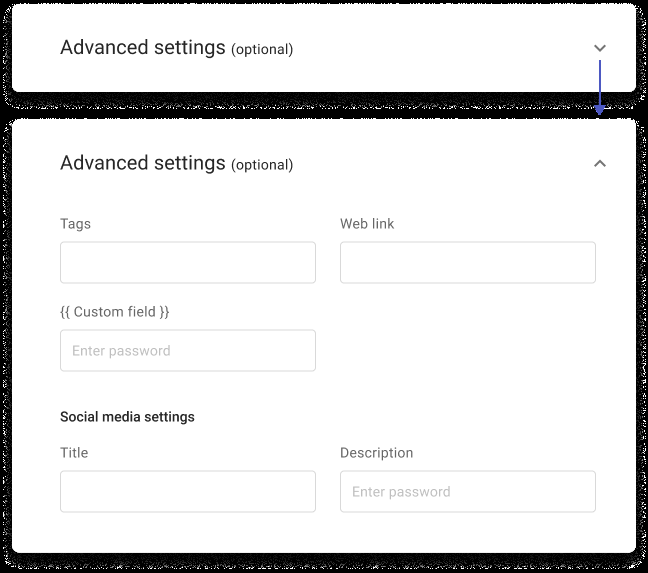

Redesigning Perx Platform
Challenge
Perx was built to help users create marketing campaigns easily. But in reality, most users only launched one campaign per year—and still leaned heavily on our Customer Success team for help, even after onboarding. Something wasn't clicking.
Solution and my Role
We gave the platform a major UX overhaul to guide users more clearly through campaign creation. I teamed up with fellow designer to rethink the entire experience—from the ground up. My contributions:
- Ran interviews with users and internal teams to spot key pain points
- Created wireframes, user flows, and interactive prototypes
- Led usability testing to validate and refine our designs
1. Research Phase
1.1 Competitive Analysis
To better understand the problem space, I looked into the market to identify conventions and gaps amongst existing products. I conducted a competitive analysis with Facebook Ads Manager, Google Ads, and Mailchimp, and concluded:
- New users are often exploring, while existing users are operating
- Overwhelmed users bookmark campaigns or drafts "to finish later" and then never return
1.2 Interviews & Affinity Mapping
I conducted 4 out of the 8 interviews. Interviewees are of executive and managerial level with little to a wealth of experience in using marketing and ads creation software. I synthesized our results and gained the following insights:
- Content assets creation, while a part of campaign creation process, is a separate stream: content assets are managed by the in-house design team and may not be ready when a marketer finalizes the campaign mechanic.
- 6 out of 8 start the process of campaign creation with a campaign goal in mind
- 8 out of 8 think of setting up the campaign audience before setting up the campaign mechanic
- 8 out of 8 think of setting up the campaign channels as a final step
1.3 Review & usability test on existing design
Along with the interviews, we also invited the participants to interact with the existing platform design and raise their pain points.
- "Serious standardization issues with regards to field labels across campaign types" - Mei
- "Didn't occur to me that leaving the audience field blank means that we're targeting everyone" - Mark
- "It's not clear where the terms and conditions I've entered will be displayed." - Ravin
- "Is selling period the validity period?" - Christine
2 Design Phase
2.1 Where should we focus the redesign?
From our findings, we learned that platform suffers from severe standardization issues across the eight different campaign types. Solving for one campaign type implies solving for seven others. In order to maximize impact of our efforts, we focused on redesigning the campaign creation flow and address standardization issues head on.
2.2 New task flow
Given that content assets creation and campaign mechanic setting up activities occur in parallel, we break down the existing 'Mechanic' step into 'Mechanic setup' and 'Content & Display setup' steps. Another benefit of doing so is we can now confine multi language customization to only 'Content & Display setup' (in existing design, multi-language options apply to all steps unnecessarily).
We found that the existing platform design demands user inputs without regard to product familiarity levels and immediate user needs. We then considered primary user scenarios to arrive at good defaults for input fields, and what should happen when there is none. Furthermore, we also prioritized which input fields to display based on their usage frequency of usage and hide optional input fields in 'advanced options'.

2.4 Disambiguate and standardize concepts
Design reviews and tests of the existing design showed users are often confused with the concepts presented because:
- Presentation of concepts ignores user perspective: the phrase 'tenant account' makes sense to Perx but need a shift in perspective for our users. Another complication is concepts like 'user' in the current platform design could mean the marketer or even the end-customer.
- Ambiguity: concepts like 'reward validity' might refer to the selling period of the reward, or the period a customer can redeem the reward once they buy and receive it in their 'wallet'.
2.5 Information architecture
I initiated an open card sorting exercise to better understand users' expectation of topics / concepts and identify recurring patterns in categorizing concepts. The exercise, however, involved only one participant as it had to be de-prioritized to address more pressing issues at the time.
2.6 Prototypes
3. Iterations & usability testings
I identified design risks in the prototypes and moderated 12 usability testings sessions with internal stakeholders and our existing clients to evaluate risk severity and probability. During the sessions, I focused on the findability and clarity of concepts, and user understanding of tasks sequence.
Our takeaways from the usability testings include:
- Users relieved from having to provide many inputs at once. (Our design iterations progressively requests user inputs)
- New design is "visually attractive and minimal"
- Users were not sure why there needs a 'validity period' when there already is a 'publish period'
- Several users were very confused by the two available methods of uploading images.
4. High fidelity designs
5. Results and learnings
The prototype received strong positive feedback from clients and the customer success team — 8 out of 12 participants found the new flow and concepts more intuitive and aligned with their expectations. However, to minimize disruption to existing users and account for developer capacity, we rolled out the redesign in smaller, manageable phases.